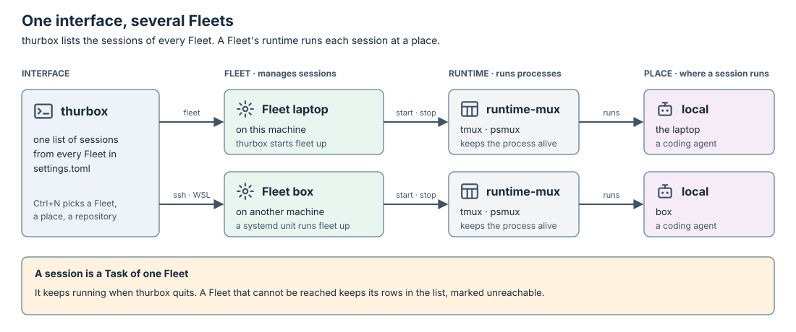

thurbox, Fleet and the runtimes are three components. They talk only by running each other's programs. All three live in one repository.

| Component | Owns |
|---|---|
thurbox, the interface (crates/thurbox) |
The TUI, the Lua kernel, rendering, the session panes, and the interface's own state in plain files: order, seen marks, bookmarks, settings, keybindings. |
Fleet, the engine (crates/fleet-*) |
Tasks (one per session), the store, every decision, the harness profiles that
launch each agent, the agent hooks (fleet signal), the inbox and the
runtime protocol.
|
A runtime (crates/runtime-*, or any program) |
Processes by key on its places, the workspaces they work in, and whatever keeps a
terminal alive there. runtime-mux (tmux, or psmux on Windows) is the
default. It is not special.
|
thurbox —fleet watch / apply / send / delete / attach→ Fleet Fleet —runtime protocol: start / inspect / stop→ a runtime pane ←terminal stream— the process fleet attach names agent —fleet signal / fleet result→ Fleet
Every session is a Fleet Task, so thurbox keeps no session database. A fact that must survive an interface restart belongs to Fleet. How to reach a terminal belongs to the runtime. How you look at things belongs to thurbox, in a file. The whole system is in docs/README.md.
Two choices decide where a session runs:
| Term | Meaning |
|---|---|
| Fleet |
Where sessions are managed: one Fleet installation and its store. thurbox reaches
it by running fleet, on this machine or over ssh or WSL.
|
| runtime | A program a Fleet runs to start and stop processes, such as runtime-mux. |
| place |
Where a runtime runs a process. Its name is <runtime>/<place>,
such as mux/wsl-dev.
|
local |
The place on the Fleet's own machine. |
thurbox can follow several Fleets, listed under [fleets.<name>] in
settings.toml. The session list follows every listed Fleet as one list. A
Fleet that cannot be reached keeps its rows, marked unreachable. Each command goes to its
session's own Fleet. thurbox starts fleet up for a Fleet on this machine when
no manager runs; on another machine, a user systemd unit runs it. See
Configuration for the [fleets] table.
thurbox boots a Rust kernel that renders whatever Lua plugins it finds under
ui/. It owns no pane of its own: the session list, the agent terminal and the
search strip are files you can edit, move, turn off or replace. See
the interface for what that means in practice.
resolve layout → call each plugin with its rect → table → nodes → paint
Five constraints keep it small, and each one is load-bearing:
text, box, input, surface. Everything
else (lists, gauges, panels) composes in Lua.
io, os, debug and the loaders are withheld rather
than stubbed, and a lint enforces it.
System chrome is not a pane. Help, settings and the theme picker are kernel-owned: they overlay the arrangement, capture input, and stay out of the focus ring. Plugins contribute data to them — declare a key and it appears in help; declare a setting and the settings modal grows a row.
One loop, one source of truth. It is demand-driven: it paints when something changed, not on every iteration, and slows its input poll once nothing has happened for a while.
tokio::main → load config + settings
→ start fleet up on this machine if no manager runs
→ follow fleet watch, once per listed Fleet
→ resolve ui/ → build the Lua host
→ init terminal
→ loop {
resolve layout → call each plugin with its rect → paint
→ poll workers (terminals, commands, diffs, metrics, repos, runs)
→ dispatch events to subscribed plugins
→ drain Lua's command queue
→ dispatch keys through the registry
}
→ restore terminal (sessions keep running: they are Fleet's)
Dependencies flow strictly one-directionally. Enforced by
crates/architecture.toml
.
session ← pure data types, no crate-internal imports fleet_link ← session + shell: the one way to a Fleet's command line kernel ← session + paths + git + notifications + theme + fleet_link cli ← session + paths + notifications + ui_control + theme + fleet_link coordinator ← main's body: the loop, the workers, the chrome
| Module | Responsibility |
|---|---|
kernel/ |
The interface: the four node primitives, layout, the Lua host and its capability grants, the key registry, the snapshot (reads) and command bus (writes), live terminal surfaces, and the worker-backed stores (diffs, metrics, repos, runs, updates). |
coordinator/ |
main's own body: the loop and its workers, then commands, publish,
draw, input, mouse, focus, events and the interface plumbing.
|
agent/ |
fetch downloads what a plugin install or the updater needs, and
input encodes keys for an agent's terminal. The agents themselves are
Fleet's harness profiles.
|
session/ |
Plain data types: SessionState, the settings, automation schedules,
diffs and plugin specs. No logic beyond pure helpers.
|
fleet_link |
Every fleet call thurbox makes: the commands, the watch, the manager,
an attach, an automation's fire and doctor's probes. A Fleet on another
machine is a launcher on the link (ssh or WSL), not a change at each call site.
|
ui/ (Lua) |
Not Rust:
layout.lua
is the arrangement,
lib/
holds widgets and theme roles, and
plugins/
holds the panes.
|
cli/ |
Headless automation (
thurbox-cli
binary). The interface's own files: config, plugins, automations, the editor,
notifications. Sessions are driven by Fleet's fleet.
|
A session's process belongs to the runtime, not to thurbox. A pane shows a session by
starting the terminal stream that fleet attach names, for a Fleet on this
machine or over the Fleet's link. vt100::Parser interprets the escape
sequences, and tui_term::PseudoTerminal renders the screen into ratatui.
runtime-mux keeps each process alive in a tmux server (psmux on native
Windows). It talks to the server in control mode (-C): output arrives as
%output notifications, and input goes in as send-keys -H.
Quitting thurbox stops the streams and leaves every process running.
Every session is a Fleet Task, so Fleet's store holds the sessions, and every Thurbox
instance follows it through fleet watch. Thurbox keeps no database. Its own
state is plain files: interface.json (theme, editor, the session order, each
companion shell's pane), automations.json, bookmarks.json and
settings.toml. A write that two instances can race takes a file lock.
Non-negotiable rules that define what Thurbox must always be. Each has an automated enforcement mechanism.
| # | Principle | Enforcement |
|---|---|---|
| 1 | Crash-free operation | Clippy + code review |
| 2 | Module isolation | crates/architecture.toml |
| 3 | Zero-warning policy |
clippy -D warnings
+
RUSTDOCFLAGS="-D warnings"
|
| 4 | Permissive licenses only | cargo-deny check bans licenses |
| 5 | Zero known vulnerabilities | cargo-deny check advisories |
| 6 | Conventional commits |
cocogitto (
cog verify
)
|
| 7 | One rendering pattern | Architecture tests + code review |
| 8 | Backend-first sessions | Code review |
| 9 | Logging never touches stdout | Code review |
| 10 | Test-driven development | cargo-nextest |
| 11 | Deterministic CI | Scripts over LLMs |
| 12 | Tag-based versioning |
build.rs
+ release workflow
|
vt100::Parser
+
tui_term::PseudoTerminal
~/.local/share/thurbox/thurbox.log